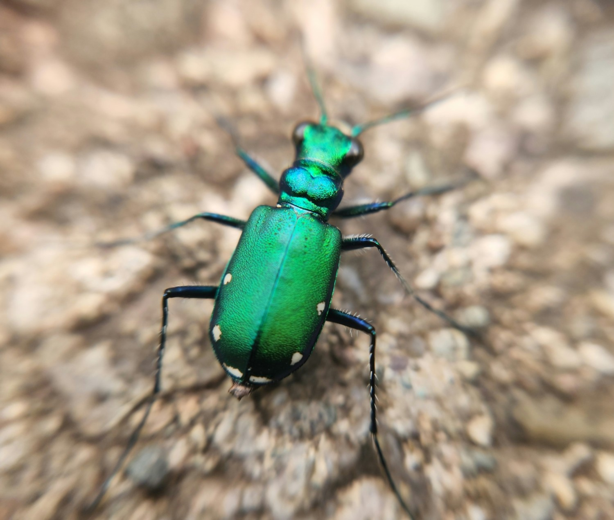
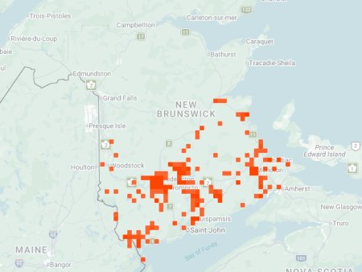

Six-spotted Tiger Beetle (photo: your name / date or iNaturalist observer)

Distribution map (based on iNaturalist observations)
Identification
- Medium-sized (12–14 mm), brilliant metallic green to blue with 6 white spots on elytra (sometimes reduced or absent).
- Body shiny; long legs for fast running.
- Common on forest trails and paths.
Habitat in New Brunswick
Forest trails, woodland edges, and open paths with bare soil. Prefers shaded to partly sunny areas.
Flight Season in NB
April to July (early spring peak; some into early summer).
Distribution & Notes
Common in forested areas across New Brunswick. Early-season species; often the first tiger beetle seen in spring.